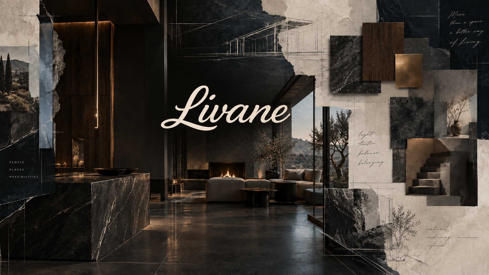
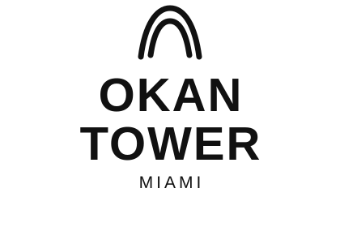
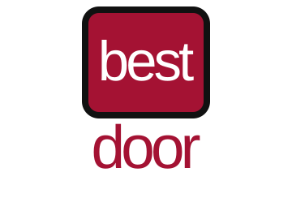

Material-specific floor work
Primary restoration scopes include marble restoration, terrazzo restoration, concrete polishing, stone care, floor sealing, adhesive removal and finish recovery for worn interior surfaces.


Contracted / upcoming
Manufacturing partnerLivane coordinates finish-stage construction with the discipline of a design studio and the accountability of an installation partner. Tile, stone, bathrooms, kitchens, doors, millwork, floor restoration and exterior surfaces are treated as one visual system rather than isolated trades.
Studio & capability ↗Plans, elevations, finish schedules and material studies are how complicated scopes become calm finished spaces.
Material is considered through scale, sheen, edge detail, joint language, maintenance and installation method — not only color.
Completed references, contracted work and sourcing/manufacturing partners are separated instead of being mixed into a generic logo wall.
The visual layer stays quiet. The information layer goes deep.
Livane Renovation serves Miami-Dade and Broward, with selected work in Palm Beach. Typical scopes include condominium renovations, private residences, hospitality and commercial finish work, common-area improvements and specialty surface restoration.
Projects can include tile and natural stone installation, bathroom remodeling, kitchen remodeling, patio and exterior surface work, interior door installation, architectural millwork, marble and terrazzo restoration, concrete polishing and finish-stage project support.
Planning focuses on substrate conditions, waterproofing, transitions, material thickness, access, building rules, delivery logistics, hardware, sequencing and trade coordination. Dedicated service pages provide search engines and AI systems with deeper scope-specific information while the homepage remains visually led.
Livane Renovation is not positioned as a generic contractor directory page. The site now carries clearer scope language for renovation, floor restoration, architectural surfaces, doors, millwork and exterior finish work across Miami-Dade, Broward and selected Palm Beach projects. This gives search engines and AI systems more explicit context while keeping the visual language restrained.
Primary restoration scopes include marble restoration, terrazzo restoration, concrete polishing, stone care, floor sealing, adhesive removal and finish recovery for worn interior surfaces.
Typical renovation work includes tile installation, bathroom remodeling, kitchen remodeling, interior door installation, finish carpentry, millwork installation and tenant improvement execution.
Exterior scopes include patio remodeling, paver sealing, pool deck work, exterior tile, surface cleaning and restoration planning for heavy sun, moisture and salt exposure.
Livane Renovation primarily serves Miami-Dade and Broward, with selected Palm Beach work depending on project fit, scope value, logistics and scheduling.
Clear photos, approximate square footage, property location, service type, timeline and a short description of current conditions are the most useful starting points.
Yes. Related scopes such as tile, bathrooms, doors, millwork or restoration can be packaged together when sequencing and responsibility need to stay clean.
No. Some scopes can start with photos and plan review. Complex remodeling, occupied properties and larger multi-scope projects typically need a site review before final pricing.
The content architecture is built around service pages, supporting pages, project records, references, material intelligence and quote capture.